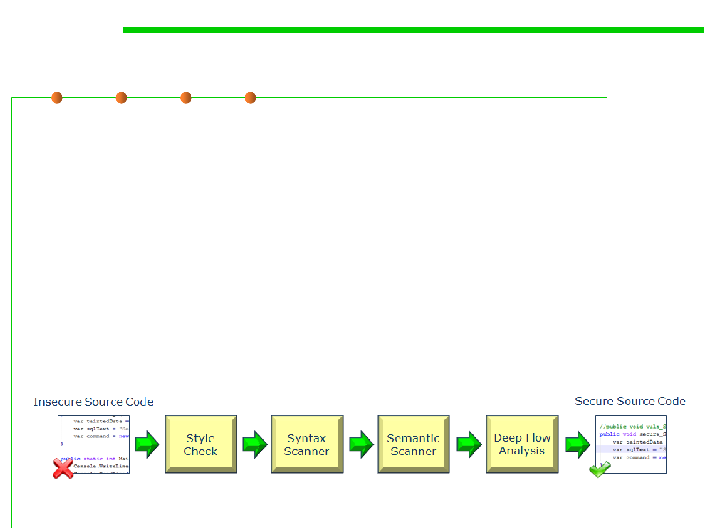

2.2 Process, Systems, and Tools of Software Construction
Static code analysis
▪ Static code analysis is the analysis of computer software that is
performed without actually executing programs (analysis
performed on executing programs is known as dynamic analysis).
▪ The process provides an understanding of the code structure, and
can help to ensure that the code adheres to industry standards.
▪ Automated tools can assist programmers and developers in
carrying out static analysis.
– e.g., CheckStyle, FindBugs, PMD for Java